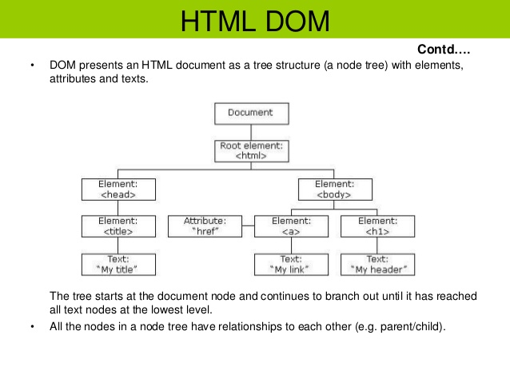
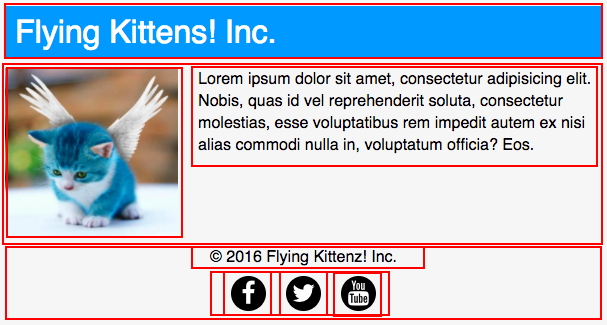

Hypertext Markup Language known as HTML, which is the standard markup language for creating web pages. This may sound like a scary terminology, but it really isn't. All this means is that the HTML language describes web-pages using ordinary text. The HTML markup consists of serval key components, these include tags (andtheir attributes), character-based data types, character references and entity references. The tags are commonly paired like "< h1 >" and "< / h1 >", although there are ones that represent indivdual/empty elements so they are unpaired, like "< img >". The first tag in the pair is known as the start tags, and the second one is the end tags (these are also known as opening tags and closing tags). The document type declaration, is another component that initiates the standards mode rendering. Down below I will show you an example of the classic "Hello world Program", this is a common template used to compare different programming languages. This example uses 9 lines of code:
1. < !DOCTYPE html >
2. < html >
3. < head >
4. < title >This is a title< / title >
5. < / head >
6. < body >
7. < p >Hello world!< / p >
8. < / body >
9. < / html >
*Please note the space between the tags should not be there. I have only used the spaces to show the tags as exmples, the proper way should have no spaces.
Cascading Style Sheet is a style sheet language, which is used to describe the presentation of the document that had been written up with the mark up language. In other words this is the page that allows you to input your text, which will define the features/looks of your main pages. Things that can be edited through the CSS are the layout, colours, and fonts. The separation between the text pages and CSS pages enbales a more controlled setting for content accessibility, provide more flexibility in the specification of the presentation characteristics. This allows you to use multiple HTML pages to share the formatting by specifying the relevant CSS in a separate .css file, and reduce complexity and repetition in the structural content.
To get more into CSS syntax click here
The Document Object Model (DOM) is the programming interface for HTML documents. It provides a structured representation of the document and it defines a way that the structure can be accessed from programs so that they can change the document structure, style and content.

The way you have to look at this term is that, every element on the web page can be sectioned out in either squares and rectangles. In other words they can be put into boxes. To boxify a design on web pages it literally means to take every element and divide them into different shapes/sized boxes. Then we can use the CSS property that will make the boxes more apparent on the webpage.

Now that we know what boxifying is, we can identify that everything is a box. There are six areas inside and outside the box: